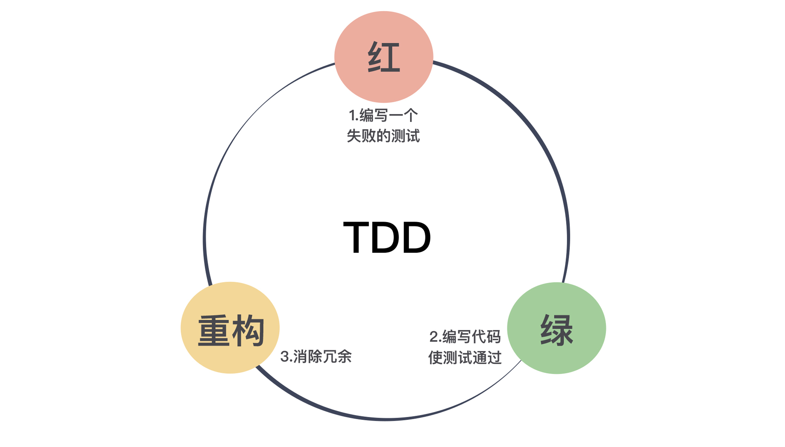

13 | 先写测试，就是测试驱动开发吗？
在上一讲中，我向你说明了为什么程序员应该写测试，今天我准备与你讨论一下程序员应该在什么阶段写测试。
或许你会说，写测试不就是先写代码，然后写测试吗？没错，这是一个符合直觉的答案。但是，这个行业里确实有人探索了一些不同的做法。接下来，我们就将进入不那么直觉的部分。
既然自动化测试是程序员应该做的事，那是不是可以做得更极致一些，在写代码之前就把测试先写好呢？
有人确实这么做了，于是，形成了一种先写测试，后写代码的实践，这个实践的名字是什么呢？它就是测试先行开发（Test First Development）。
我知道，当我问出这个问题的时候，一个名字已经在很多人的脑海里呼之欲出了，那就是测试驱动开发（Test Driven Development），也就是大名鼎鼎的 TDD，TDD 正是我们今天内容的重点。
在很多人看来，TDD 就是先写测试后写代码。在此我必须澄清一下，这个理解是错的。先写测试，后写代码的实践指的是测试先行开发，而非测试驱动开发。
下一个问题随之而来，测试驱动开发到底是什么呢？测试驱动开发和测试先行开发只差了一个词：驱动。只有理解了什么是驱动，才能理解了测试驱动开发。要理解驱动，先来看看这两种做法的差异。
测试驱动开发
学习 TDD 的第一步，是要记住TDD的节奏：“红-绿-重构”。

红，表示写了一个新的测试，测试还没有通过的状态；绿，表示写了功能代码，测试通过的状态；而重构，就是再完成基本功能之后，调整代码的过程。
这里说到的“红和绿”，源自单元测试框架，测试不过的时候展示为红色，通过则是绿色。这在单元测试框架形成之初便已经约定俗成，各个不同语言的后代也将它继承了下来。
我们前面说过，让单元测试框架流行起来的是 JUnit，它的作者之一是 Kent Beck。同样，也是 Kent Beck 将 TDD 从一个小众圈子带到了大众视野。
考虑到 Kent Beck 是单元测试框架和 TDD 共同的贡献者，你就不难理解为什么 TDD 的节奏叫“红-绿-重构”了。
测试先行开发和测试驱动开发在第一步和第二步是一样的，先写测试，然后写代码完成功能。二者的差别在于，测试驱动开发并没有就此打住，它还有一个更重要的环节：重构（refactoring）。
也就是说，在功能完成而且测试跑通之后，我们还会再次回到代码上，处理一下代码上写得不好的地方，或是新增代码与旧有代码的重复。因为我们第二步“绿”的关注点，只在于让测试通过。
测试先行开发和测试驱动开发的差异就在重构上。
很多人通过了测试就认为大功告成，其实，这是忽略了新增代码可能带来的“坏味道（Code Smell）”。
如果你真的理解重构，你就知道，它就是一个消除代码坏味道的过程。一旦你有了测试，你就可以大胆地重构了，因为任何修改错误，测试会替你捕获到。
在测试驱动开发中，重构与测试是相辅相成的：没有测试，你只能是提心吊胆地重构；没有重构，代码的混乱程度是逐步增加的，测试也会变得越来越不好写。
因为重构和测试的互相配合，它会驱动着你把代码写得越来越好。这是对“驱动”一词最粗浅的理解。
测试驱动设计
接下来，我们再来进一步理解“驱动”：由测试驱动代码的编写。
许多人抗拒测试有两个主要原因：第一，测试需要“额外”的工作量。这里我特意把额外加上引号，因为，你也许本能上认为，测试是额外的工作，但实际上，测试也应该是程序员工作的一部分，这在上一篇文章中我已经讲过。
第二，很多人会觉得代码太多不好测。之所以这些人认为代码不好测，其中暗含了一个假设：代码已经写好了，然后，再写测试来测它。
如果我们把思路反过来，我有一个测试，怎么写代码能通过它。一旦你先思考测试，设计思路就完全变了：我的代码怎么写才是能测试的，也就是说，我们要编写具有可测试性的代码。用这个角度，测试是不是就变得简单了呢？
这么说还是有些抽象，我们举个写代码中最常见的问题：static 方法。
很多人写代码的时候喜欢使用 static 方法，因为用着省事，随便在哪段代码里面，直接引用这个 static 方法就可以。可是，一旦当你写测试的时候，你就会发现一个问题，如果你的代码里直接调用一个static 方法，这段代码几乎是没法测的。尤其是这个 static 方法里面有一些业务逻辑，根据不同业务场景返回各种值。为什么会这样？
我们想想，常见的测试手法应该是什么样的？如果我们在做的是单元测试，那测试的目标应该就是一个单元，在这个面向对象作为基础设施流行的时代，这个单元大多是一个类。测试一个类，尤其是一个业务类，一般会涉及到一些与之交互的类。
比如，常见的 REST 服务三层架构中，资源层要访问服务层，而在服务层要访问数据层。编写服务层代码时，因为要依赖数据层。所以，测试服务层通常的做法是，做一个假的数据层对象，这样即便数据层对象还没有编写，依然能够把服务层写完测好。
在之前的“蛮荒时代”，我们通常会写一个假的类，模拟被依赖那个类，因为它是假的，我们会让它返回固定的值，使用这样的类创建出来的对象，我们一般称之为 Stub 对象。
这种“造假”的方案之所以可行，一个关键点在于，这个假对象和原有对象应该有相同的接口，遵循同样的契约。从设计上讲，这叫符合 Liskov 替换法则。这不是我们今天讨论的重点，就不进一步展开了。
因为这种“造假”的方案实在很常见，所以，有人做了框架支持它，就是常用的 Mock 框架。使用 Mock 对象，我们可以模拟出被依赖对象的各种行为，返回不同的值，抛出异常等等。
它之所以没有用原来 Stub 这个名字，是因为这样的 Mock 对象往往有一个更强大的能力：验证这个 Mock 对象在方法调用过程中的使用情况，比如调用了几次。
我们回到 static 的讨论上，你会发现 Mock 对象的做法面对 static 时行不通了。因为它跳出了对象体系，static 方法是没法继承的，也就是说，没法用一系列面向对象的手法处理它。你没有办法使用 Mock 对象，也就不好设置对应的方法返回值。
要想让这个方法返回相应的值，你必须打开这个 static 方法，了解它的实现细节，精心地按照里面的路径，小心翼翼地设置对应的参数，才有可能让它给出一个你预期的结果。
更糟糕的是，因为这个方法是别人维护的，有一天他心血来潮修改了其中的实现，你小心翼翼设置的参数就崩溃了。而要重新进行设置的话，你只能把代码重读一遍。
如此一来，你的工作就退回到原始的状态。更重要的是，它并不是你应该关注的重点，这也不会增加你的 KPI。显然，你跑偏了。
讨论到这里你已经知道了 static 方法对测试而言，并不友好。所以，如果你要想让你的代码更可测，一个好的解决方案是尽量不写 static 方法。
这就是“从测试看待代码，而引起的代码设计转变”的一个典型例子。
关于 static 方法，我再补充几点。static 方法从本质上说，是一种全局方法，static 变量就是一种全局变量。我们都知道，全局方法也好，全局变量也罢，都是我们要在程序中努力消除的。一旦放任 static 的使用，就会出现和全局变量类似的效果，你的程序崩溃了，因为别人在另外的地方修改了代码，代码变得脆弱无比。
static 是一个方便但邪恶的东西。所以，要限制它的使用。除非你的 static 方法是不涉及任何状态而且行为简单，比如，判断字符串是否为空。否则，不要写 static 方法。你看出来了，这样的 static 方法更适合做库函数。所以，我们日常写应用时，能不用尽量不用。
前面关于 static 方法是否可以 Mock 的讨论有些绝对，市面上确实有某些框架是可以 Mock static方法的，但我不建议使用这种特性，因为它不是一种普遍适用的解决方案，只是某些特定语言特定框架才有。
更重要的是，正如前面所说，它会在设计上将你引到一条不归路上。
如果你在自己的代码遇到第三方的 static 方法怎么办，很简单，将第三方代码包装一下，让你的业务代码面对的都是你自己的封装就好了。
以我对大多数人编程习惯的认知，上面这个说法是违反许多人编程直觉的，但如果你从代码是否可测的角度分析，你就会得到这样的结论。
先测试后写代码的方式，会让你看待代码的角度完全改变，甚至要调整你的设计，才能够更好地去测试。所以，很多懂 TDD 的人会把 TDD 解释为测试驱动设计（Test Driven Design）。
还有一个典型的场景，从测试考虑会改变的设计，那就是依赖注入（Dependency Injection）。
不过，因为 Spring 这类 DI 容器的流行，现在的代码大多都写成了符合依赖注入风格的代码。原始的做法是直接 new 一个对象，这是符合直觉的做法。但是，你也可以根据上面的思路，自己推演一下，从 new 一个对象到依赖注入的转变。
有了编写可测试代码的思路，即便你不做 TDD，依然对你改善软件设计有着至关重要的作用。所以，写代码之前，请先想想怎么测。
即便我做了调整，是不是所有的代码就都能测试了呢？不尽然。从我个人的经验上看，不能测试的代码往往是与第三方相关的代码，比如访问数据库的代码，或是访问第三方服务之类的。但不能测试的代码已经非常有限了。我们将它们隔离在一个小角落就好了。
至此，我们已经从理念上讲了怎样做好 TDD。有的人可能已经跃跃欲试了，但更多的人会用自己所谓的“经验”告诉你，TDD 并不是那么好做的。
怎么做好 TDD 呢？下一讲，我会给你继续讲解，而且，我们“任务分解大戏”这个时候才开始真正拉开大幕！
总结时刻
一些优秀的程序员不仅仅在写测试，还在探索写测试的实践。有人尝试着先写测试，于是，有了一种实践叫测试先行开发。还有人更进一步，一边写测试，一边调整代码，这叫做测试驱动开发，也就是 TDD。
从步骤上看，关键差别就在，TDD 在测试通过之后，要回到代码上，消除代码的坏味道。
测试驱动开发已经是行业中的优秀实践，学习测试驱动开发的第一步是，记住测试驱动开发的节奏：红——绿——重构。把测试放在前面，还带来了视角的转变，要编写可测的代码，为此，我们甚至需要调整设计，所以，有人也把 TDD 称为测试驱动设计。
如果今天的内容你只能记住一件事，那请记住：我们应该编写可测的代码。
最后，我想请你分享一下，你对测试驱动开发的理解是怎样的呢？学习过这篇内容之后，你又发现了哪些与你之前理解不尽相同的地方呢？欢迎在留言区写下你的想法。
感谢阅读，如果你觉得这篇文章对你有帮助的话，也欢迎把它分享给你的朋友。